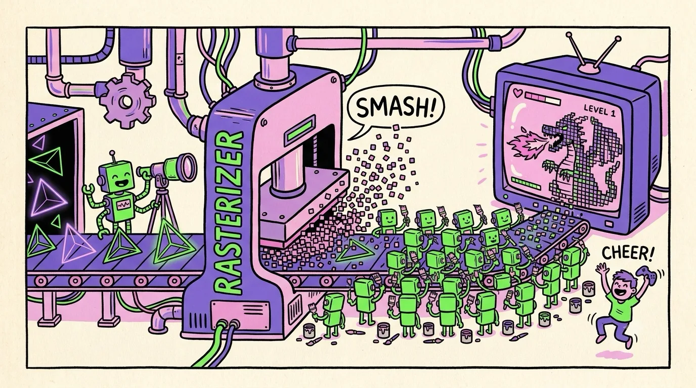

Chapter 06 · The Day Job
The Graphics Pipeline: Triangles to Pixels
Before GPUs moonlighted as AI engines, they had — and still have — a day job: turning 3D worlds into 2D screens, 60+ times a second. Everything on a game screen, from a dragon to a blade of grass, is built from one humble shape: the triangle. A big game frame pushes millions of them. The assembly line that turns triangles into colored pixels is called the graphics pipeline, and it's a beautiful case study of everything you've learned so far.
Why triangles?
Because a triangle is the simplest shape that's always flat (three points define exactly one plane), always well-defined (never self-intersecting), and dead simple to test: "is this pixel inside?" is three cheap edge checks. Simple + uniform + millions of them — by now that phrase should make your GPU senses tingle.
The assembly line
Walking one triangle of a dragon's wing through the line:
- Vertex shader — runs once per corner point. Takes the vertex's position in the 3D world and answers: where does this land on your screen? A few matrix multiplies (camera position, perspective). One dragon ≈ hundreds of thousands of vertices, all independent — one warp-friendly thread each.
- Rasterization — dedicated, non-programmable hardware scans each screen-space triangle and spits out a fragment for every pixel it covers, interpolating values (texture coordinates, depth) across the surface. It's so common it's welded into silicon.
- Fragment shader — runs once per fragment. Answers: what color is this pixel? It samples textures, computes lighting ("surface faces away from the sun → darker"), applies fog, shadows, sparkle. This is where games spend most of their GPU time — 2 million+ pixels, 60 times a second.
- Depth test & blend — fixed hardware keeps the closest surface (so the wing hides the body behind it) and blends transparency, writing the final color to the framebuffer.
Until 2006, vertex and pixel work ran on separate, specialized hardware units — and one was always idle while the other sweated. NVIDIA's G80 unified them into one pool of general cores that could do either job… and that pool is exactly the CUDA-core architecture you met in Chapter 3. The flexibility added for graphics is what accidentally made GPUs programmable enough for everything else. AI runs on hardware designed to load-balance dragons.
A real fragment shader
Shaders are written in little C-like languages (GLSL, HLSL, WGSL, Metal). Here's a complete GLSL fragment shader that does classic diffuse lighting — this is real code you could paste into a WebGL page or shadertoy.com tonight:
diffuse.frag — runs once for EVERY pixel of the surfaceuniform sampler2D u_texture; // the surface's image
uniform vec3 u_lightDir; // direction of the sun
in vec2 v_uv; // interpolated by the rasterizer
in vec3 v_normal; // which way the surface faces
out vec4 fragColor;
void main() {
vec3 base = texture(u_texture, v_uv).rgb;
float light = max(dot(normalize(v_normal), u_lightDir), 0.15);
fragColor = vec4(base * light, 1.0); // paint my one pixel
}
Look at the shape of it: no loops over pixels, just "here's what I do for my pixel." It's Chapter 4's kernel style, invented years earlier. Fragment shaders were how early researchers first smuggled science onto GPUs — they disguised physics as "pixels" and read the answers back out of images. CUDA was built to make that hack unnecessary.

A funny zine-style cartoon factory cutaway, hand-drawn ink with flat colors (electric green, violet, pink on cream paper): a conveyor belt where raw wireframe triangles enter on the left; a robot at station one repositions them with a surveyor's telescope; a big stamping machine labeled "RASTERIZER" smashes each triangle into a shower of tiny square pixels; an army of tiny painter robots with brushes colors each pixel individually at station three; finished glowing pixels assemble into a heroic dragon picture on a TV at the end of the line, with a gamer kid cheering. Exaggerated, playful, no small unreadable text. Target size ~1280×720px, 16:9 landscape; composed for a small on-page figure, subject centred with safe margins — it is letterboxed into a 16:9 box, so keep nothing important near the edges.
Generate this with your image agent, then drop the file here.
The modern pipeline: rays and neural pixels
Two upgrades define the current era, and both confirm this book's running theme — when work gets common enough, it gets its own silicon:
- Ray tracing (RT cores, 2018→). Instead of projecting triangles at the screen, trace light rays backward from the camera and bounce them around the scene — real reflections, real shadows. The expensive part (testing rays against millions of triangles) got dedicated RT core hardware, one per SM.
- Neural rendering (DLSS). The cheekiest trick in graphics: render the frame small (say 1080p), then have a neural network — running on the Tensor Cores you'll meet next chapter — hallucinate a sharp 4K version, and even generate entire extra frames between real ones (DLSS 4 generates up to three). Many "4K" pixels you see in a 2026 game were never rendered; they were predicted. The graphics chip now uses AI to do graphics.
The pipeline is the GPU's origin story and its blueprint: identify massively repeated independent work (vertices, pixels, rays, matrix tiles) → run it on oceans of threads → weld the hottest patterns into fixed hardware. Graphics did it first; AI is just the newest tenant in the same building.
Speaking of which — those Tensor Cores keep photobombing every chapter. Time to meet the matrix engines that turned GPUs from "great at AI" into "built for AI."
Sources Wikipedia, "Graphics pipeline" (en.wikipedia.org) · GPU Shader Tutorial, "The GPU Render Pipeline" (shader-tutorial.dev) · NVIDIA, DLSS 4 overview (nvidia.com) · Vulkan Guide, "The render pipeline" (vkguide.dev)